Visão geral
Painel
Seus números do período, em gráficos
Carregando dados…
Seu painel ainda está vazio. Faça um lançamento ou gere dados de exemplo para ver os gráficos funcionando.
Saldo disponível
R$ 0,00
Receitas − despesas − investimentos, desde o primeiro lançamentoReceitas
R$ 0,00
Despesas
R$ 0,00
Investido
R$ 0,00
Taxa de poupança
—
(Receitas − despesas) ÷ receitasFluxo do período
Sem lançamentos neste período.
Destino da receita
Sem receitas neste período.
Maiores despesas
Sem despesas neste período.
Últimos lançamentos
Nenhum lançamento no momento.
AMBot analista
Selecione o mês para fechar e guardar o histórico permanente.
Histórico
Nenhum histórico registrado.
Dados do usuário
Usuário
A foto é recortada em quadrado e reduzida para 160 px (cerca de 10 KB) antes de ser salva. O arquivo original não é enviado.
Alterar senha
Por segurança, confirme a senha atual antes de definir uma nova.
Aparência
Escolha o tema da interface. No modo automático, o app segue o seu dispositivo.
Sessão
Encerre o acesso neste dispositivo.
Dados de exemplo
Cria cerca de 180 lançamentos fictícios dos últimos 12 meses (salário, aluguel, mercado, investimentos e outros) para você ver os gráficos funcionando. Eles aparecem com o selo “Exemplo” e podem ser removidos de uma vez, sem afetar os seus lançamentos reais.
Nenhum lançamento de exemplo na conta.
Primeiros passos
O AMTech Financeiro registra o que entra e o que sai da sua conta e mostra o resultado em gráficos. Tudo é salvo na sua conta e pode ser acessado de qualquer dispositivo.
- Lance seus movimentos. Em Lançar, informe valor, tipo, data e descrição. Leva poucos segundos.
- Acompanhe no Painel. Saldo, gráficos e comparação com o período anterior se atualizam sozinhos.
- Feche o mês. Em Fechar mês, guarde o resultado do mês no histórico para consultar depois.
Os três tipos de lançamento
Painel
É a tela inicial. Resume o seu dinheiro em números e gráficos, para você ver de relance como o período está indo.
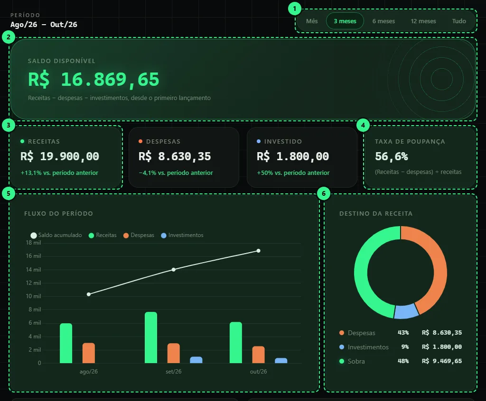
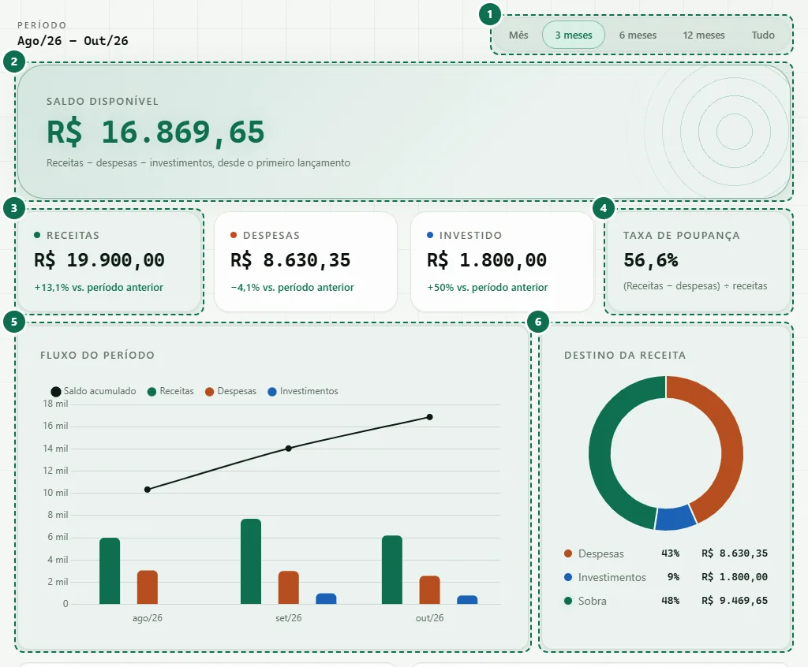
- Período. Escolha Mês, 3, 6 ou 12 meses, ou Tudo. A troca muda os indicadores e os gráficos, mas não o saldo disponível.
- Saldo disponível. Tudo o que entrou, menos o que saiu e o que foi investido, desde o primeiro lançamento. Aparece em verde quando é positivo e em vermelho quando é negativo.
- Receitas, despesas e investido. Totais do período. A linha de baixo compara com o período anterior do mesmo tamanho, sempre com + ou −.
- Taxa de poupança. (Receitas − despesas) ÷ receitas. Mostra a parte da receita que sobrou depois das despesas.
- Fluxo do período. Barras de receitas, despesas e investimentos por mês (ou por dia, no modo Mês). A linha é o saldo acumulado. Passe o mouse ou toque para ver os valores.
- Destino da receita. Quanto da receita foi para despesas, para investimentos e quanto sobrou.
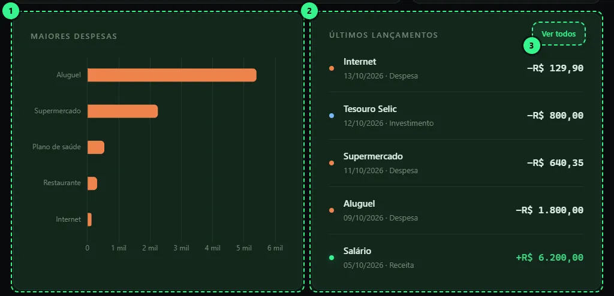
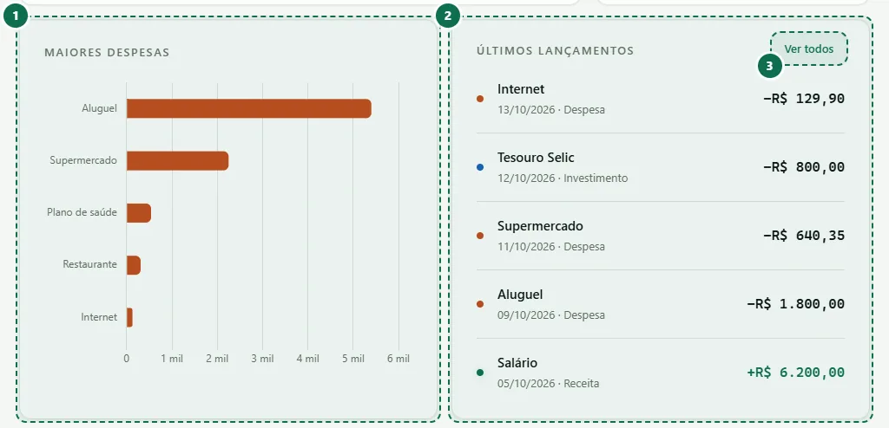
- Maiores despesas. As cinco descrições que mais pesaram no período. Lançamentos com a mesma descrição são somados.
- Últimos lançamentos. Os cinco registros mais recentes, de qualquer período.
- Ver todos. Abre a Consulta com a lista completa.
Mais abaixo, o AMBot analista comenta o seu saldo e sugere onde aplicar o que sobrou. É uma ferramenta de apoio, não uma recomendação financeira.
Lançar
Aqui você registra uma receita, uma despesa ou um investimento. Todos os campos são obrigatórios.
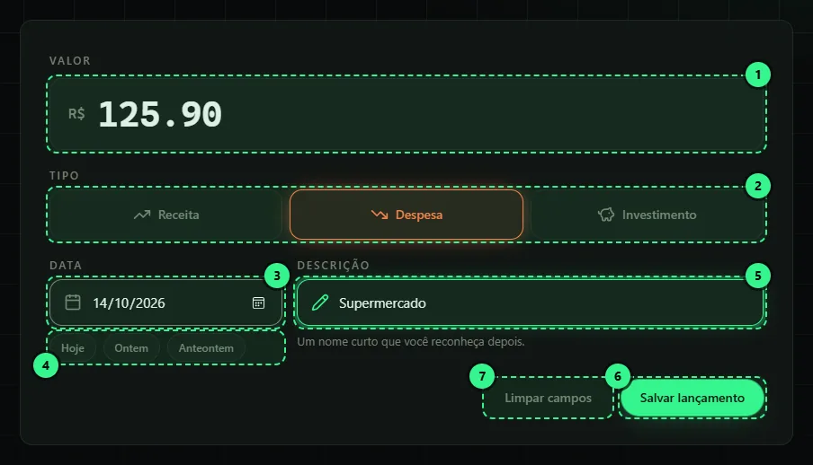
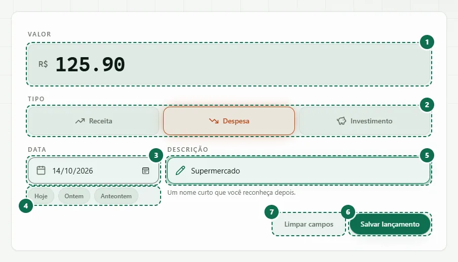
- Valor. Digite só o número, sem “R$”. Use vírgula ou ponto para os centavos (por exemplo, 125,90). Precisa ser maior que zero.
- Tipo. Receita, Despesa ou Investimento. O tipo define se o valor soma ou subtrai do saldo e a cor do lançamento em todo o sistema.
- Data. Já vem com o dia de hoje. Toque no campo para abrir o calendário e escolher outro dia.
- Atalhos de data. Hoje, Ontem e Anteontem preenchem a data com um toque.
- Descrição. Um nome curto que você reconheça depois, com até 80 caracteres (por exemplo, “Supermercado”). Descrições iguais são somadas no gráfico de maiores despesas.
- Salvar lançamento. Grava o registro. Se faltar algum campo, a mensagem em vermelho indica qual corrigir.
- Limpar campos. Volta o formulário ao estado inicial, inclusive se você estiver editando um lançamento.
Consulta
Lista todos os lançamentos, do mais recente ao mais antigo. Daqui você também edita ou apaga um registro.
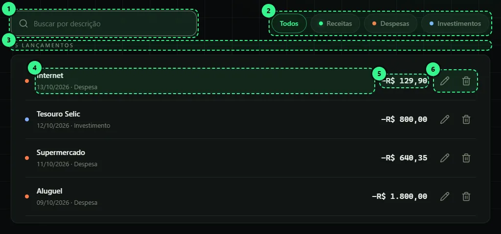
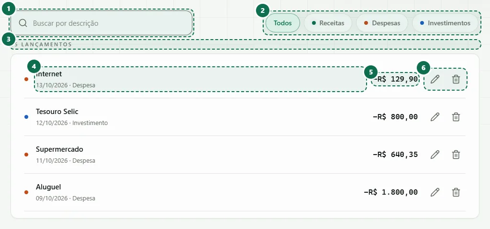
- Busca. Filtra pela descrição enquanto você digita. Não diferencia maiúsculas, minúsculas nem acentos.
- Filtros por tipo. Todos, Receitas, Despesas ou Investimentos. Dá para combinar com a busca.
- Contador. Mostra quantos lançamentos aparecem, por exemplo “3 lançamentos de 12”.
- Descrição, data e tipo. O ponto colorido repete a cor do tipo: verde para receita, laranja para despesa e azul para investimento.
- Valor. Sempre com sinal: + para receita e − para despesa e investimento.
- Editar e apagar. O lápis abre o formulário já preenchido, e o botão passa a dizer “Atualizar lançamento”. A lixeira pede confirmação antes de apagar, e não dá para desfazer.
Fechar mês
Guarda o resultado de um mês no histórico, como uma foto do período. Ajuda a comparar meses depois.
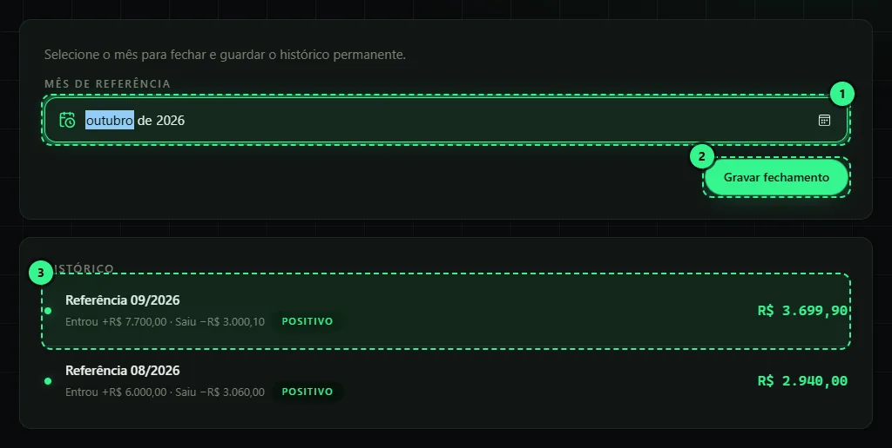
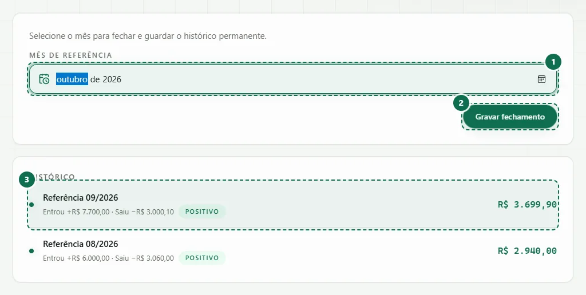
- Mês de referência. Escolha o mês que quer fechar.
- Gravar fechamento. Soma os lançamentos daquele mês e salva receitas, despesas, investimentos e saldo final. Os lançamentos continuam editáveis, e um novo fechamento do mesmo mês cria outro registro.
- Histórico. Cada linha mostra o mês, quanto entrou, quanto saiu e o saldo, com o selo Positivo, Negativo ou Zerado.
Minha conta
Seus dados, a foto de perfil, a troca de senha e o tema da interface.
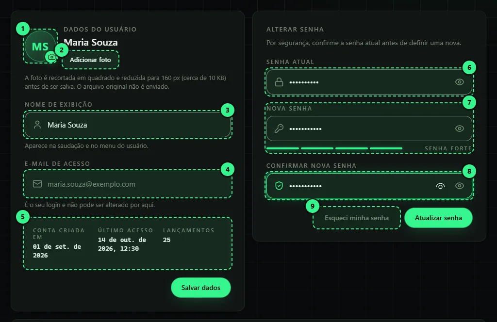
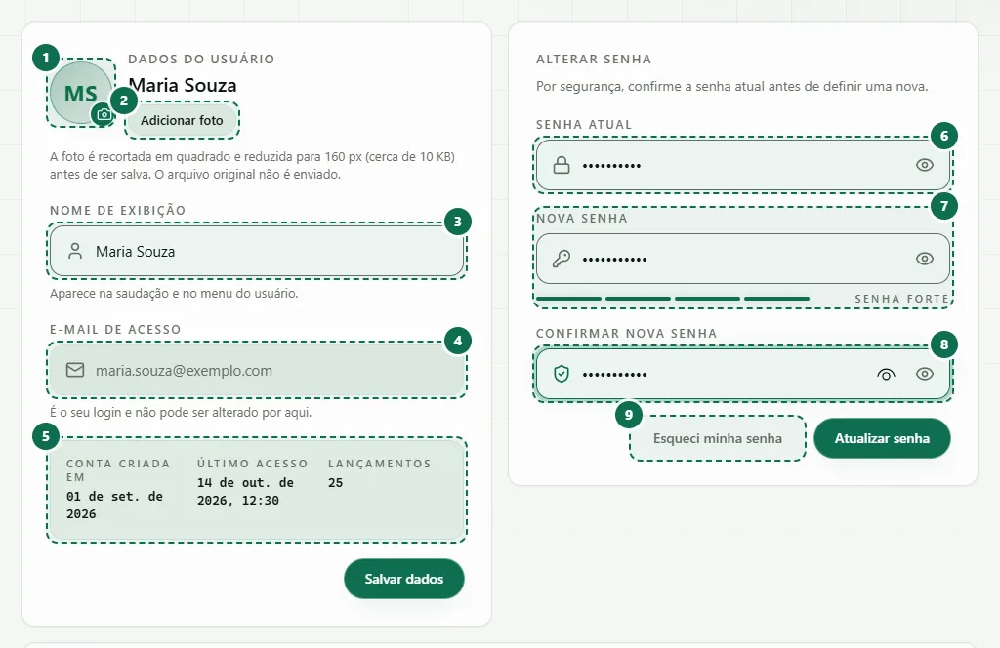
- Foto de perfil. Mostra suas iniciais até você escolher uma foto. Aparece no menu, na barra superior e nesta tela.
- Alterar foto. Escolha uma imagem do aparelho (ou tire uma foto, no celular). Ela é recortada em quadrado, reduzida para 160 px e comprimida para cerca de 10 KB antes de ser salva. O arquivo original nunca é enviado.
- Nome de exibição. Aparece na saudação e nos menus. Use pelo menos 2 letras.
- E-mail de acesso. É o seu login. Aparece em cinza porque não pode ser alterado por aqui.
- Dados da conta. Data de criação, último acesso e quantos lançamentos você tem.
- Senha atual. Necessária por segurança para confirmar que é você.
- Nova senha. Use 6 caracteres ou mais. A barra indica a força: misture letras maiúsculas e minúsculas, números e símbolos para chegar em “Forte”.
- Confirmar nova senha. Repita a nova senha. O olho ao lado de cada campo mostra ou esconde o que você digitou.
- Esqueci minha senha. Envia um link de redefinição para o seu e-mail.
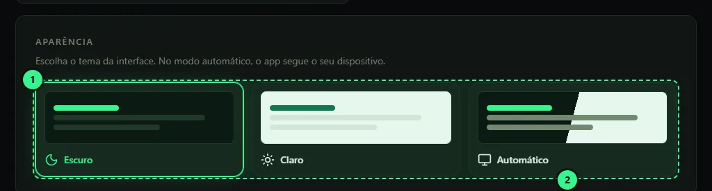
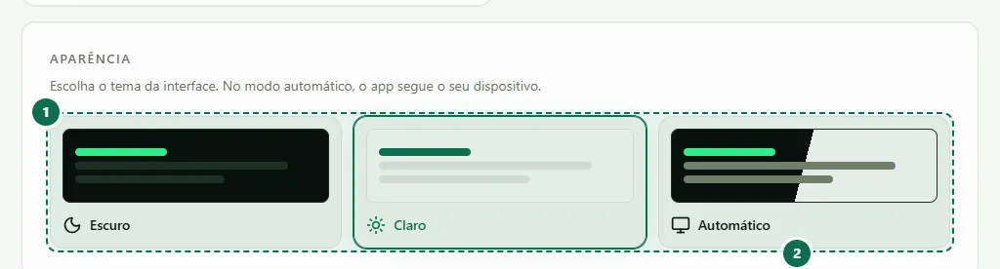
- Tema. Escuro, Claro ou Automático. No automático, o sistema segue a configuração do seu aparelho.
- Sair da conta. Encerra o acesso neste dispositivo.
Como o saldo é calculado
O saldo disponível considera todos os lançamentos, de qualquer data.
Saldo = receitas − despesas − investimentos
Exemplo: você recebeu R$ 5.000,00 de salário, pagou R$ 1.500,00 de aluguel e investiu R$ 800,00 no Tesouro Selic. O saldo disponível é R$ 2.700,00.
O dinheiro investido sai do saldo disponível porque já não está livre para gastar, mas continua sendo seu. Por isso o painel mostra os investimentos separados.
Perguntas frequentes
Errei um valor ou o tipo de um lançamento. O que faço?
Abra a Consulta, toque no lápis do lançamento, corrija e use “Atualizar lançamento”. Se preferir, apague e lance de novo.
Por que o saldo não muda quando troco o período?
O saldo disponível sempre considera todo o histórico. Só os indicadores e os gráficos mudam com o período.
O que o “Fechar mês” faz com os meus lançamentos?
Nada. Ele só guarda um resumo do mês no histórico. Você pode continuar lançando e editando normalmente.
Minha foto ocupa espaço no servidor?
Muito pouco. A imagem é recortada, reduzida para 160 × 160 pixels e comprimida para cerca de 10 KB, menos do que uma foto de miniatura comum. Só essa versão pequena é salva, junto com o seu perfil.
Esqueci a minha senha.
Na tela de entrada, use “Esqueceu a senha?” e informe o e-mail. Se já estiver dentro do sistema, vá em Minha conta e use “Esqueci minha senha”. Você recebe um link para criar uma nova.
Os meus dados ficam visíveis para outras pessoas?
Não. Cada lançamento é salvo com o identificador da sua conta, e o sistema só lista os seus. Para entrar é preciso e-mail e senha.
Dá para usar no celular?
Sim. O menu vira uma barra na parte de baixo da tela e os formulários se ajustam ao tamanho do aparelho. Ajuda e Sair ficam no menu do usuário, no canto superior direito.
Como vejo os gráficos funcionando sem lançar nada?
Em Minha conta, role até “Dados de exemplo” e use “Gerar dados de exemplo”. O sistema cria lançamentos fictícios dos últimos 12 meses, marcados com o selo “Exemplo”. Quando quiser, “Remover dados de exemplo” apaga só eles e preserva os seus lançamentos reais. No Painel vazio há um atalho para o mesmo botão.
Os gráficos não aparecem.
Os gráficos precisam de internet para carregar. Verifique a conexão e recarregue a página. O indicador “Sincronizado” na barra superior mostra se os dados estão chegando.